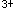

A.氧化磷酸化过程存在于线粒体内
B.物质在氧化时伴有ADP磷酸化生成ATP的过程
C.氧化磷酸化过程有两条呼吸链
D.P/O可以确定ATP的生成数
E.电子经呼吸链传递至氧产生3分子ATP
参考答案：E
题目解析：在氧化磷酸化过程中，一对电子从FADH传递至氧产生1.5个ATP。由于FADH直接将电子传递给细胞色素C复合物，不经过NADH-CoQ还原酶，所以当一对电子从FADH传递至氧时只有6个质子由基质泵出，合成1分子ATP需4个质子，共形成1.5个ATP。E说法错误，其他选项说法皆正确，故本题选E。
A.细胞色素c
B.细胞色素b
C.辅酶Q
D.细胞色素aa
E.细胞色素c
参考答案：D
题目解析：氰化物毒性强烈、作用迅速。被食用后在肠道内水解释放出CN-，中毒原理是CN-与细胞色素（细胞色素aa）氧化酶中的Fe起反应，形成氰化细胞色素氧化酶，失去了递氧作用。故选D。
A.都需催化剂
B.都需在温和条件下进行
C.都是逐步释放能量
D.生成的终产物不同
E.生成的终产物基本相同
题目解析：反应产物都是CO、HO和能量。
A.是一种辅基
B.递氢机制与FMN相同
C.是递氢递电子体
D.含1分子核黄素、1分子腺嘌呤，2分子核糖，2分子磷酸
E.只传递电子，不传递质子
题目解析：FAD是递氢递电子体，能传递2H、2e。
A.NADH呼吸链是提供氧化磷酸化所需能量的主要途径
B.呼吸链的各组分是按标准氧化还原电位，由低到高排列的
C.电子传递方向从高还原电位流向高氧化电位
D.每对氢原子氧化时都产生2.5个ATP
E.不同物质脱下的氢进入呼吸链，产生的ATP数也不相同
题目解析：不同物质脱下的氢进入呼吸链的部位不同，产生的ATP数也不相同，并不都是产生2.5个ATP。
A.FAD→FMN
B.Cytc→Cyt
C.CoQ→Cytb
D.Cytc→Cyta
E.FMN→CoQ
题目解析：呼吸链与磷酸化相偶联的3个部位分别是FMN(Fe-S)、Cytb→Cytcl→Cytc、Cytc→Cytaa。
A.脂酰CoA
B.异柠檬酸
C.丙酮酸
D.β-羟丁酸
E.α-羟丁酸
参考答案：A
题目解析：脂酰CoA脱下的氢进入FADH氧化呼吸链，不进入NADH呼吸链。
A.丙酮酸
B.苹果酸
C.谷氨酸
E.琥珀酸
题目解析：一对电子经琥珀酸氧化呼吸链传递，P/O比值约为1.5，如琥珀酸、α-磷酸甘油；一对电子经NADH氧化呼吸链传递，产生2.5个ATP，即P/O比值约为2.5，如β-羟丁酸、苹果酸、异柠檬酸、谷氨酸、丙酮酸等。
A.呼吸链中各递氢体可将H从线粒体膜内转运到膜外
B.H不能自由通过线粒体内膜
C.在线粒体膜内外形成电化学梯度而储存能量
D.线粒体膜内外形成的电化学梯度包括H浓度梯度和跨膜电位差
E.当质子顺浓度梯度回流时驱动ADP与Pi生成ATP
题目解析：氧化磷酸化偶联机理的化学渗透学说，其基本要点是电子经呼吸链传递时，可将质子(H)从线粒体内膜基质侧泵到内膜胞浆侧，产生膜内外质子电化学梯度，以此储存能量。当质子顺浓度梯度回流时驱动ADP与Pi生成ATP。
A.氧化反应
B.还原反应
C.水解反应
D.葡萄糖醛酸结合反应
E.7α-羟化酶催化反应
题目解析： 生物转化反应可分为两相反应。第一相包括氧化、还原、水解反应，第二相即结合反应，葡萄糖醛酸结合反应属于第二相反应，故1题选D。胆汁酸合成过程中，羟化是最主要的变化。首先在7α-羟化酶催化下，胆固醇转变为7α-羟胆固醇，然后再转变成鹅脱氧胆酸或胆酸，后者的生成还需要在12位上进行羟化。7α-羟化是限速步骤，7α-羟化酶是限速酶，故2题选E。
A.ATP
B.2，3-二磷酸甘油酸
C.磷酸肌酸
D.糖原
E.蛋白质
题目解析： 组织的能量储存形式。
参考答案：B
参考答案：C
微信关注
 )从线粒体内膜基质侧泵到内膜胞浆侧，产生膜内外质子电化学梯度，以此储存能量。当质子顺浓度梯度回流时驱动ADP与Pi生成ATP。
)从线粒体内膜基质侧泵到内膜胞浆侧，产生膜内外质子电化学梯度，以此储存能量。当质子顺浓度梯度回流时驱动ADP与Pi生成ATP。